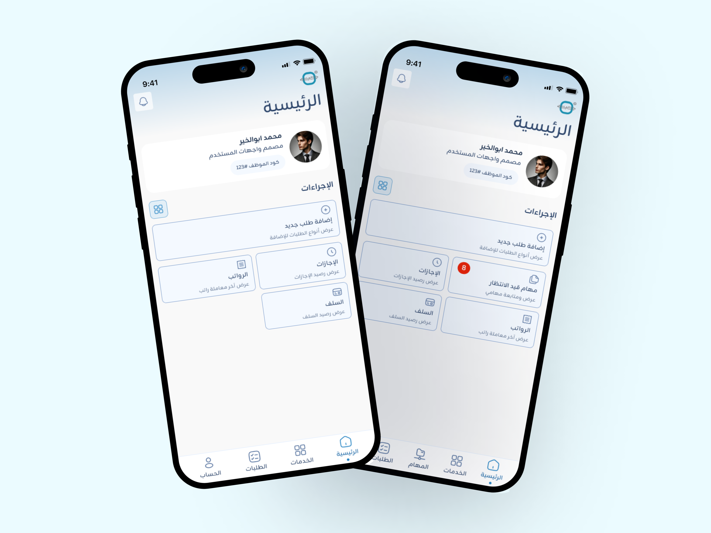
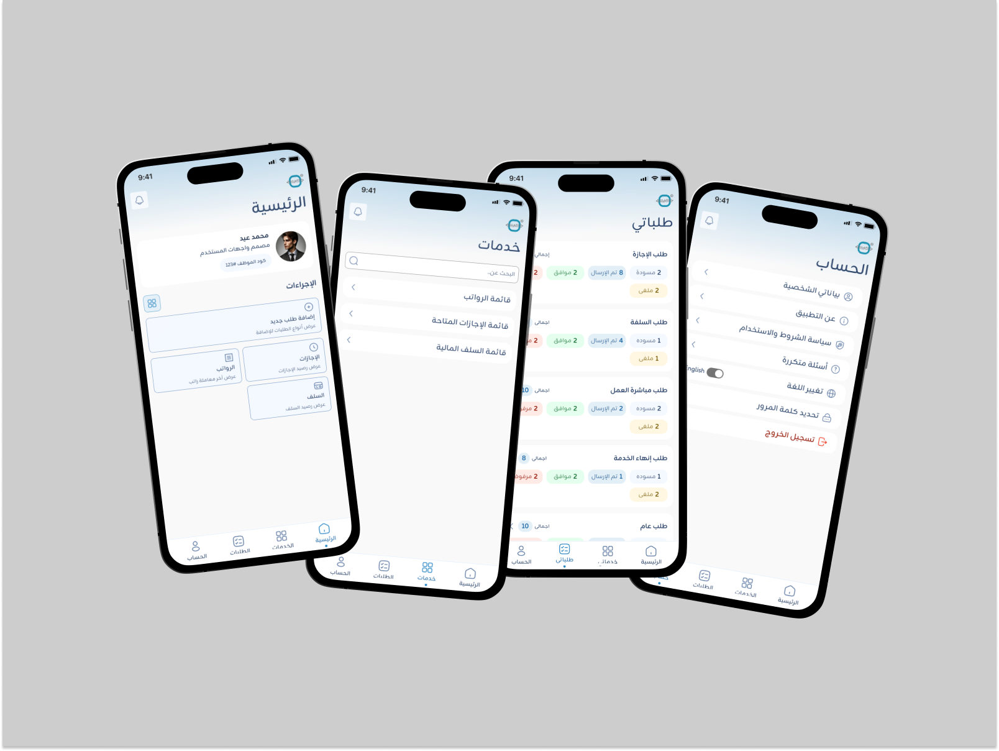

Microtec HRM Mobile App: Employee Self-Service & 1-Tap Manager Approvals
I designed the mobile companion app for the Microtec HRM platform, turning desktop-bound HR tasks into fast, role-based mobile flows for employee self-service and 1-tap manager approvals.

Context & Scope
While the Microtec web platform handled heavy back-office HR operations, employees and managers needed a fast way to manage daily workforce tasks away from their desks.
- Designed a role-based mobile companion app serving both employees and managers in one unified experience.
- Streamlined employee self-service for attendance, leave requests, payslips, and loan advances.
- Created a dedicated approvals experience for managers to review team requests and act on them on the go.
- Simplified complex desktop ERP data into clean mobile cards, bottom sheets, and intuitive navigation.

User Experience Barriers & Business Impact
- Desktop-bound bottlenecks: Employees had to contact HR admins or use a desktop computer just to check leave balances, view payslips, or submit basic requests.
- Delayed approvals: Pending leave and financial requests piled up whenever managers were in meetings or away from their desks.
- Persona and role conflict: Managers needed team oversight and approval queues, while employees needed personal self-service putting both into one fixed layout caused clutter.
- Dense data on small screens: Translating detailed payroll breakdowns, attendance logs, and HR policies onto small mobile screens risked overwhelming users.
Insight 01: Employees Needed Self-Service Without Waiting on HR
Routine questions about remaining leave days, shift schedules, and salary deductions created unnecessary daily workload for the HR team.
- Decision (Actionable Home Dashboard): The app adapts to the user’s role. Employees see personal self-service, and managers also get team attendance and pending requests.
- Decision (Guided Request Flows): Simplified leave and financial requests into clean, step-by-step mobile flows with instant balance visibility.
Insight 02: Managers Needed to Unblock Requests in Seconds
Managers rarely had time to navigate deep menus on their phones just to approve a single leave request.
- Decision (Role-Based Permissions & Views): Structured the app to adapt dynamically to the user’s role, surfacing team attendance and pending queues specifically for managers.
- Decision (1-Tap Approvals Inbox): Designed an actionable inbox where managers can see key request details (dates, leave type, remaining balance) and approve or reject in one tap.
Insight 03: Complex ERP Data Needed Mobile-First Clarity
Employees struggled to read dense salary tables and attendance records on small mobile viewports.
- Decision (Card-Based Layouts): Replaced wide desktop tables with scan-friendly summary cards and expandable monthly salary breakdowns.
- Decision (Focused Bottom Sheets): Used clean bottom sheets for request forms and filters so users can complete actions quickly without losing context.

Interactive Prototype Validation
To ensure the mobile experience felt effortless for everyday tasks, we validated interactive prototypes across core user journeys:
- Evaluation: Tested key mobile flows submitting a leave request, viewing a monthly payslip, and completing manager approvals.
- Result: Replacing multi-screen forms with focused bottom sheets and clear summary cards eliminated user friction and kept task completion fast and simple.Early prototyping and staging QA eliminated edge-case calculation bugs and ensured complete design parity with zero handoff confusion.
- Launch: Delivered a cohesive mobile companion experience that seamlessly extends the Microtec web platform.
Delivering a Unified Mobile Companion for Employees & Managers
Delivering a role-based mobile HRM experience for Microtec:
- Home & Attendance Hub: Quick check-in/out visibility, shift schedules, and live leave balance summaries.
- Self-Service Requests: Simple mobile flows for submitting leaves, permissions, and loan advances.
- Manager Approvals Inbox: A focused queue for reviewing, approving, or rejecting pending team requests in one tap.
- Digital Payslips & Profile: Clean, expandable monthly salary breakdowns, bonuses, deductions, and employee profile details.
Managers Experience


Employees Experience


Impact & Results
- Employee Self-Service: Reduced routine administrative overhead on HR teams by giving employees direct mobile access to their records, leaves, and payslips.
- Faster Manager Approvals: Eliminated approval bottlenecks by allowing managers to act on pending requests from anywhere in one tap.
- Simplified Mobile ERP Experience: Successfully translated complex back-office HR modules into a clean, intuitive mobile interface built for everyday on-the-go use.